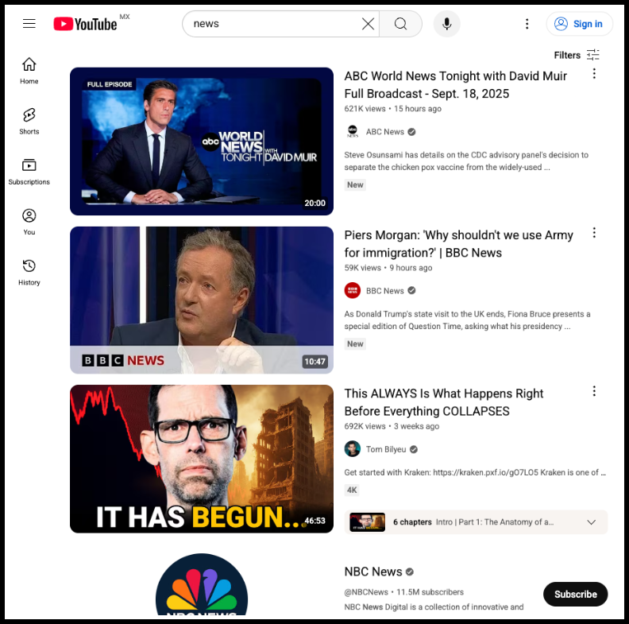
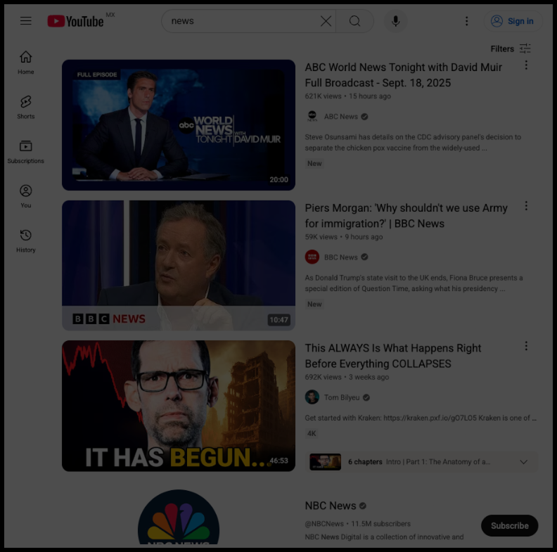
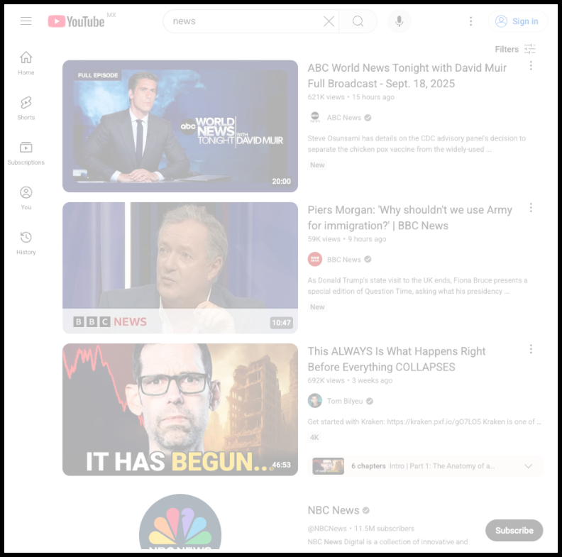
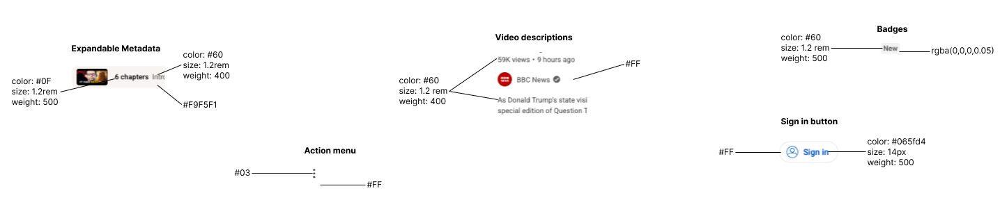

Designing for Daylight: A Tablet Redesign for Natural‑Light Display
4 min read
For this exercise I wanted to design for RLCD. The brief: pick a real tablet app, analyze its UX, and redesign key screens so they feel native to reflective LCD—where clarity, contrast, and comfort matter more than backlit “pop.” The goal was to show product judgment and craft, not a full rebuild.
Analyzing the current design
Let's start with a screenshot of the YouTube search page simulating a standard tablet resolution (Surface Pro).
Figure 1 YouTube screenshot
To quickly identify visibility concerns, simulate different ambient light conditions. Results will not be exact as technology on LCDs is different from RLCDs, and this simulation suppose balanced light distribution (if, let's say you try to use your phone's flashlight in the center of a RLCD, things directly below the focus will appear sharper than elements on the edges). However, simulating these can help understand which elements in the screen can become ambiguous. I added a version in black and white to test overall contrast (this also kinda simulates how it would look as e-ink).
Figure 2 On black and white, the screen's elements have generally good contrast, making this an accessible design for LCD screens (which will always emit enough light to ensure good contrast levels).
Figure 3 Simulated low ambient light. Because YouTube doesn't have a dark interface on their web app and whites appear darker, that makes the contrast between foreground and background is not accessible enough, specially on sections with gray backgrounds.
Figure 4 On high (white) light conditions, colors still appear contrasting enough, except some grays (channel checkmarks), and the sign in color.
Learnings
- I can't use standards like WCAG to pick colors from these abstractions and check contrast and luminance because I'd be comparing sRGB colors (colors emitted from back-light), not colors reflected from an external light source (which is the technology RLCD uses).
- I don't have the physical device, so I used the abstractions above to find potential color or contrast issues.
- Even if I had the display's color gamut, it would be the gamut under one specific light.
Ideally we could use a mix of usability testing (qualitative) to identify UI issues alongside more sophisticated simulations using the physical device or a gamut range using different edge conditions (i.e. calculating gamut for what we define as low, middle and high lighting).
Testing problematic elements
Even if I can't directly use WCAG, it is still the best way (that I could find) to ensure colors and text/foreground are legible in rLCDs. I just need to aim for higher contrast and luminance ratios. To simplify the process, I used the simulations above to focus on just problematic elements. Then I will calculate the foreground/background contrast (using the original CSS colors) and see if I can improve them while keeping YouTube general color branding and contextual use.
Figure 5 Annotated prototypes highlighting accessibility issues: low‑contrast gray text, faint separators and badges, and a small 14px “Sign in” label that risks WCAG/APCA failures on light backgrounds.
Recommendations summary
The color combinations #606060 against #FFFFFF #606060 against #F9F5F1 #606060 against #F9F5F1 #065fd4 against #FFFFFF are WCAG AA but not AAA compatible for small text. So we can either make them: 18 point (pt) or larger OR 14 point (pt) or larger AND bold
Solutions
- make secondary text (video metadata) text bigger (we could use the OS accessibility settings to make all fonts bigger)
- make thin icons use #000000 instead of any gray tone to ensure maximum contrast without diverging from material design principles. As they are SVG we can also make them bigger alongside fonts
Transparencies can not be displayed well on low DPIs
Solution
- use #F2F3F2 instead ofrgba(0,0,0,0.5)
#0F0F0F against #F9F5F1 is WCAG AAA, so no need to change those
Figma prototype
The final prototype and components (alongside this document) can be found here, check Step 5 for my workflow.
What if YouTube web had a dark mode?
I guess it would be more energy efficient and would cause less visual fatigue for environments with low ambient light. Also, it'd potentially reduce contrast issues (based on the low-light simulation image.